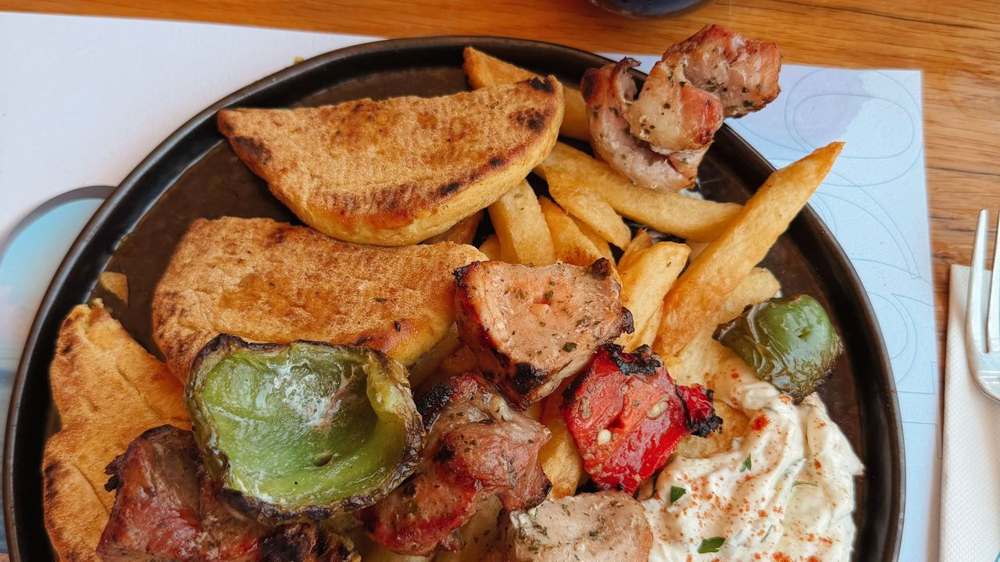
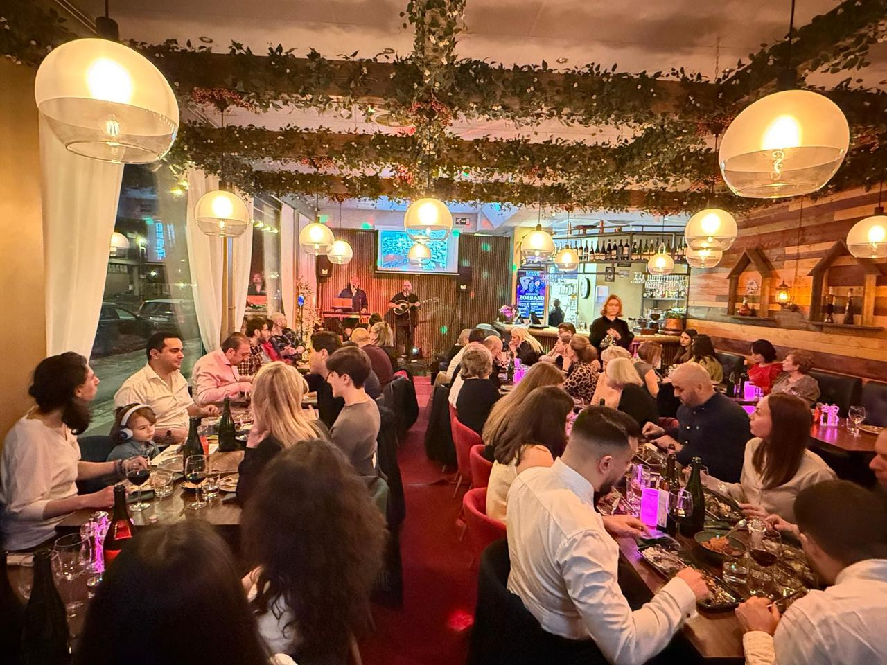

01
Lammracks
Grillat, med rostade grönsaker.

Lammracks, souvlaki och generösa meze – serverat med värme på S:t Göransgatan 121.
Grillat, med rostade grönsaker.
Mör och smakrik.
Med tzatziki och pitabröd.
Grillad oxe från grillen.
Ring 08-619 04 00 för att boka bord.
På Milos lagas grekisk mat från grunden och serveras i en matsal full av grönska och ljus. Här firas födelsedagar, afterworks och vanliga tisdagar på samma generösa sätt.
i snittbetyg – många kallar det Stockholms bästa grekiska mat, med lammracks, souvlaki och varm service.

| Måndag – torsdag | 16:00 – 22:00 |
| Fredag | 16:00 – 23:00 |
| Lördag | 12:00 – 23:00 |
| Söndag | 12:00 – 22:00 |
S:t Göransgatan 121, 112 19 Stockholm
Kungsholmen · nära T-Fridhemsplan
08-619 04 00
info@milosrestaurang.se